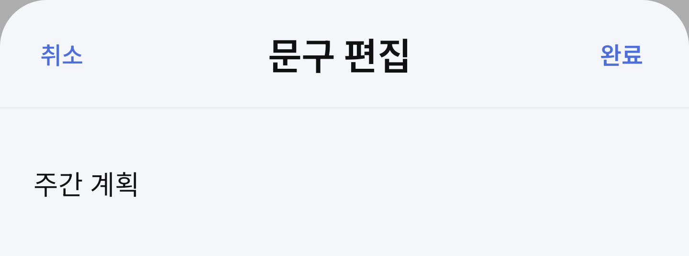
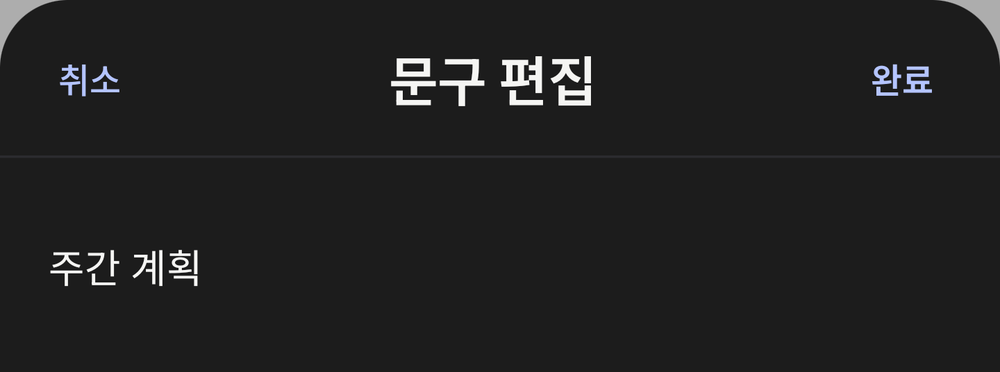

WidgetEditorSheet
홈 화면 위젯에서 실행한 동작의 앱 편집 UI를 투명 Activity 내부에 배치합니다.
- 컴포넌트 ID
widget-editor-sheet- 분류
- 모달
- 구현
WidgetEditorSheet·MyWidget/app/src/main/java/com/mywidget/editor/feature/widgetblockdialog/WidgetEditorSheet.kt:60- 주요 API
- title, onDismiss, onApply 및 draft/validation 상태, content
- 지원 상태
- 초안
- 오류
- 저장 중
- 저장 실패
- 폐기 확인
- IME
- 변형
- 텍스트·수치·목록 편집 호스트
- 크기
- 호스트 높이에 따른 제한
- 고정 액션
- 테마·토큰
- MaterialTheme.colorScheme
- 투명 Activity 창 테마
- 접근성·사용 규칙
- Back·스크림·스와이프에서 변경사항 보존 여부를 확인하고 IME가 열려도 본문과 동작이 접근 가능합니다.
- 공통 사용 여부
- 위젯에서 실행한 기본 텍스트/목록 및 Custom 인터랙션 폼에서 사용
- 설계 품질
- 런처 위에 겹치는 창·저장 보호를 소유하는 별도 호스트
- 판단
- 화면 전용 구현으로 유지
- 판단 근거
- 일반 StudioSheet의 Dialog 창으로 대체하면 런처 투명성·뒤로가기와 태스크 종료 계약이 바뀝니다.
- 구현·문서
- 현재 소스 위치와 심볼 확인
- 렌더링
- 네이티브 캡처 있음
코드 예시
WidgetEditorSheet(
title = "문구 편집", hasChanges = true, canApply = true, isSaving = false,
errorMessage = null, onApply = {}, onDismiss = {},
) {
WidgetSheetInput("주간 계획", {}, label = "문구", modifier = Modifier.fillMaxWidth())
}Android 네이티브 예시
아래 캡처에 표시된 상태와 기기 조건을 확인했습니다.

411 × 891 dp · 560 dpi · 글꼴 1배 · API 35 · ko-KR
캡처 기준 HEAD
28c96a452 · 소스 지문 2926a62326fe · 2026-11-13T13:54:53.964821Z
411 × 891 dp · 560 dpi · 글꼴 1배 · API 35 · ko-KR
캡처 기준 HEAD
28c96a452 · 소스 지문 2926a62326fe · 2026-11-13T13:54:53.964821Z